Generated: 2026-03-11 14:52
1,772
2,024
246
13
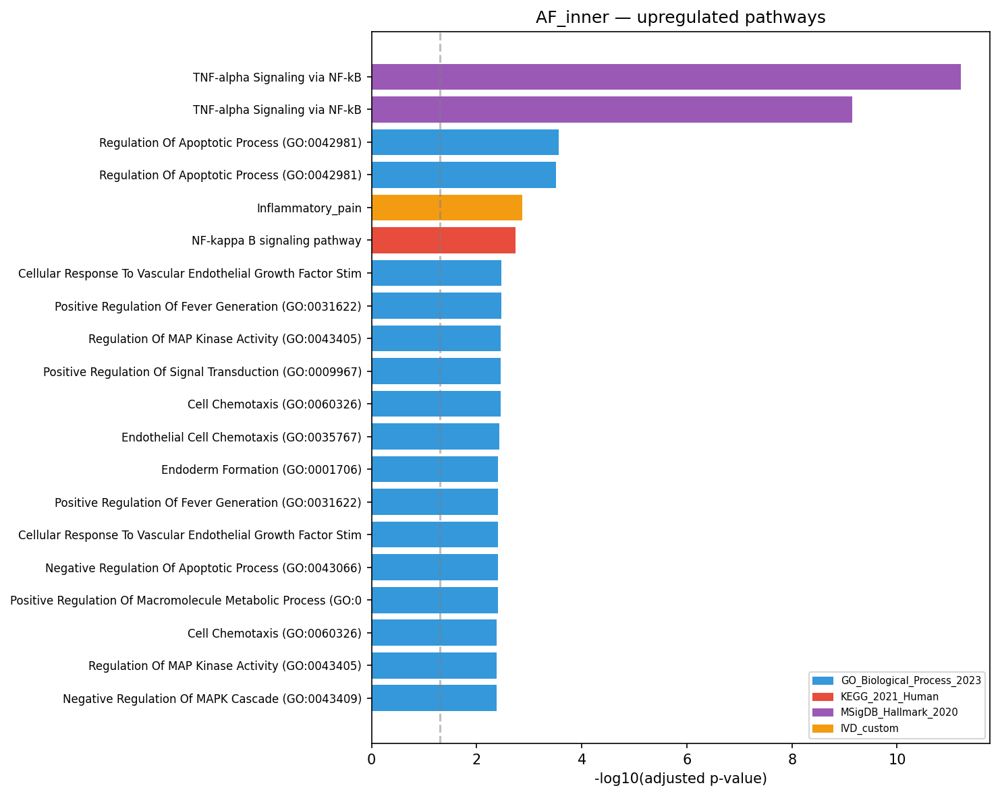
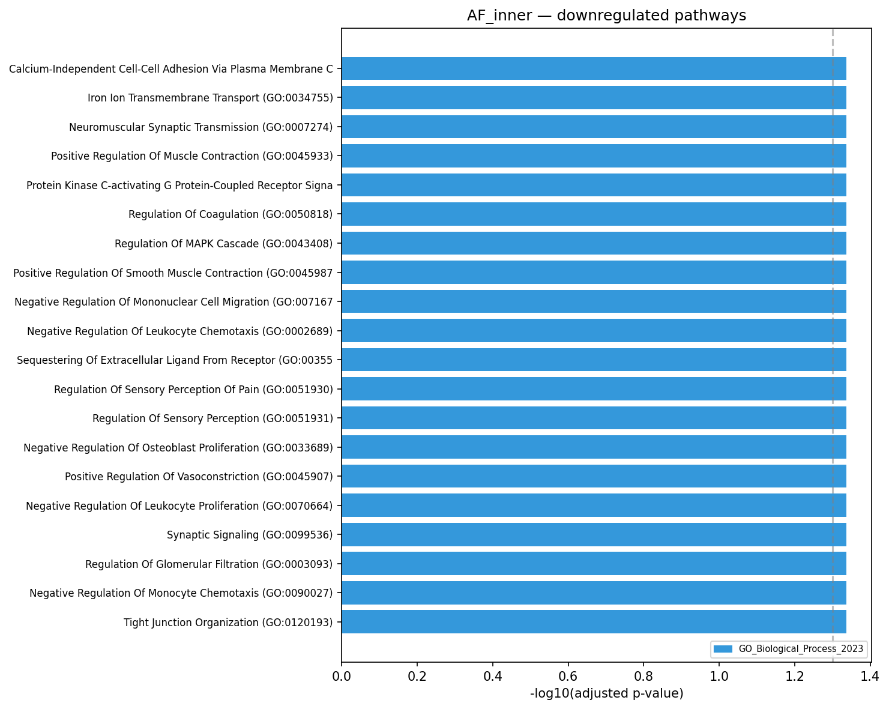
| Term | Direction | Library | Overlap | Adj P | Comparison |
|---|---|---|---|---|---|
| TNF-alpha Signaling via NF-kB | up | MSigDB_Hallmark_2020 | nan | 6.2e-12 | healthy_vs_degenerated_severe |
| TNF-alpha Signaling via NF-kB | up | MSigDB_Hallmark_2020 | nan | 7.1e-10 | healthy_vs_degenerated_all |
| Regulation Of Apoptotic Process (GO:0042981) | up | GO_Biological_Process_2023 | nan | 2.7e-04 | healthy_vs_degenerated_severe |
| Regulation Of Apoptotic Process (GO:0042981) | up | GO_Biological_Process_2023 | nan | 3.1e-04 | healthy_vs_degenerated_all |
| Inflammatory_pain | up | IVD_custom | 2/11 | 1.3e-03 | healthy_vs_degenerated_severe |
| NF-kappa B signaling pathway | up | KEGG_2021_Human | nan | 1.8e-03 | healthy_vs_degenerated_all |
| Cellular Response To Vascular Endothelial Growth Factor Stimulus (GO:0035924) | up | GO_Biological_Process_2023 | nan | 3.4e-03 | healthy_vs_degenerated_all |
| Positive Regulation Of Fever Generation (GO:0031622) | up | GO_Biological_Process_2023 | nan | 3.4e-03 | healthy_vs_degenerated_all |
| Regulation Of MAP Kinase Activity (GO:0043405) | up | GO_Biological_Process_2023 | nan | 3.5e-03 | healthy_vs_degenerated_all |
| Cell Chemotaxis (GO:0060326) | up | GO_Biological_Process_2023 | nan | 3.5e-03 | healthy_vs_degenerated_all |
| Positive Regulation Of Signal Transduction (GO:0009967) | up | GO_Biological_Process_2023 | nan | 3.5e-03 | healthy_vs_degenerated_all |
| Endothelial Cell Chemotaxis (GO:0035767) | up | GO_Biological_Process_2023 | nan | 3.7e-03 | healthy_vs_degenerated_all |
| Negative Regulation Of Apoptotic Process (GO:0043066) | up | GO_Biological_Process_2023 | nan | 3.9e-03 | healthy_vs_degenerated_severe |
| Cellular Response To Vascular Endothelial Growth Factor Stimulus (GO:0035924) | up | GO_Biological_Process_2023 | nan | 3.9e-03 | healthy_vs_degenerated_severe |
| Positive Regulation Of Fever Generation (GO:0031622) | up | GO_Biological_Process_2023 | nan | 3.9e-03 | healthy_vs_degenerated_severe |

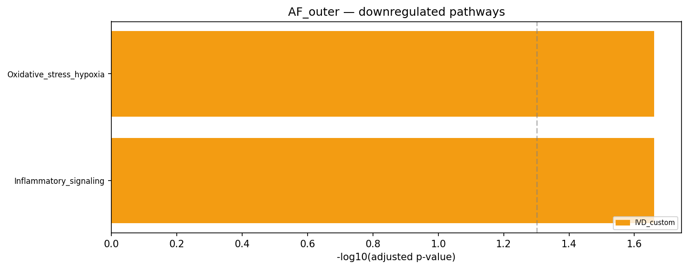
| Term | Direction | Library | Overlap | Adj P | Comparison |
|---|---|---|---|---|---|
| Inflammatory_signaling | down | IVD_custom | 1/18 | 2.2e-02 | healthy_vs_degenerated_severe |
| Oxidative_stress_hypoxia | down | IVD_custom | 1/13 | 2.2e-02 | healthy_vs_degenerated_severe |
| Interleukin-2 Signaling R-HSA-9020558 | up | Reactome_2022 | nan | 2.9e-02 | healthy_vs_degenerated_severe |
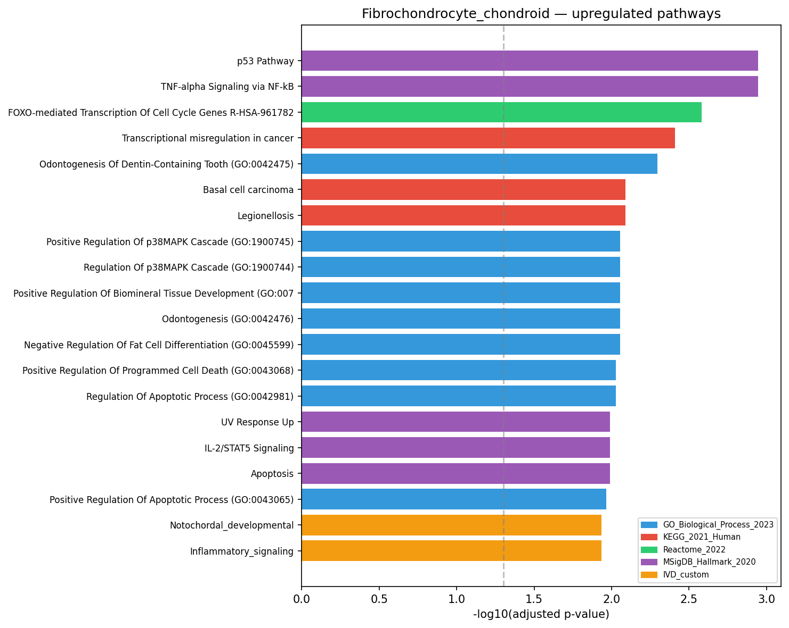
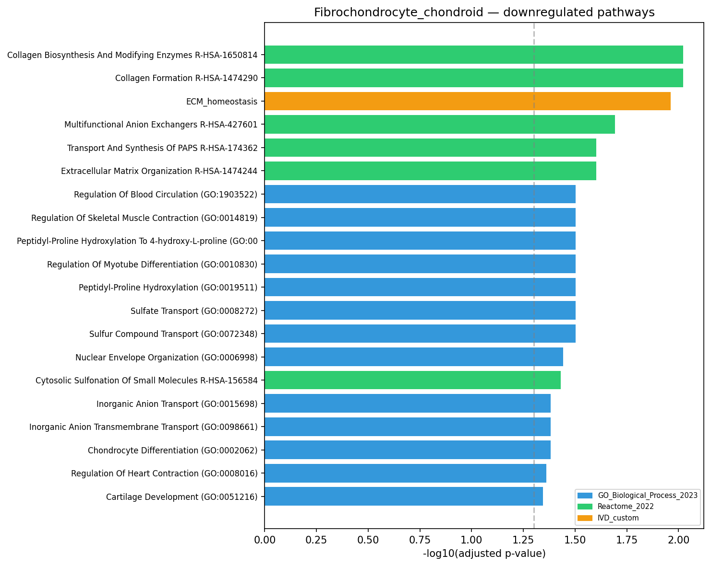
| Term | Direction | Library | Overlap | Adj P | Comparison |
|---|---|---|---|---|---|
| TNF-alpha Signaling via NF-kB | up | MSigDB_Hallmark_2020 | nan | 1.1e-03 | mild_vs_severe |
| p53 Pathway | up | MSigDB_Hallmark_2020 | nan | 1.1e-03 | mild_vs_severe |
| FOXO-mediated Transcription Of Cell Cycle Genes R-HSA-9617828 | up | Reactome_2022 | nan | 2.6e-03 | mild_vs_severe |
| Transcriptional misregulation in cancer | up | KEGG_2021_Human | nan | 3.9e-03 | mild_vs_severe |
| Odontogenesis Of Dentin-Containing Tooth (GO:0042475) | up | GO_Biological_Process_2023 | nan | 5.0e-03 | mild_vs_severe |
| Legionellosis | up | KEGG_2021_Human | nan | 8.1e-03 | mild_vs_severe |
| Basal cell carcinoma | up | KEGG_2021_Human | nan | 8.1e-03 | mild_vs_severe |
| Positive Regulation Of p38MAPK Cascade (GO:1900745) | up | GO_Biological_Process_2023 | nan | 8.8e-03 | mild_vs_severe |
| Negative Regulation Of Fat Cell Differentiation (GO:0045599) | up | GO_Biological_Process_2023 | nan | 8.8e-03 | mild_vs_severe |
| Odontogenesis (GO:0042476) | up | GO_Biological_Process_2023 | nan | 8.8e-03 | mild_vs_severe |
| Positive Regulation Of Biomineral Tissue Development (GO:0070169) | up | GO_Biological_Process_2023 | nan | 8.8e-03 | mild_vs_severe |
| Regulation Of p38MAPK Cascade (GO:1900744) | up | GO_Biological_Process_2023 | nan | 8.8e-03 | mild_vs_severe |
| Positive Regulation Of Programmed Cell Death (GO:0043068) | up | GO_Biological_Process_2023 | nan | 9.3e-03 | mild_vs_severe |
| Regulation Of Apoptotic Process (GO:0042981) | up | GO_Biological_Process_2023 | nan | 9.3e-03 | mild_vs_severe |
| Collagen Biosynthesis And Modifying Enzymes R-HSA-1650814 | down | Reactome_2022 | nan | 9.5e-03 | mild_vs_severe |
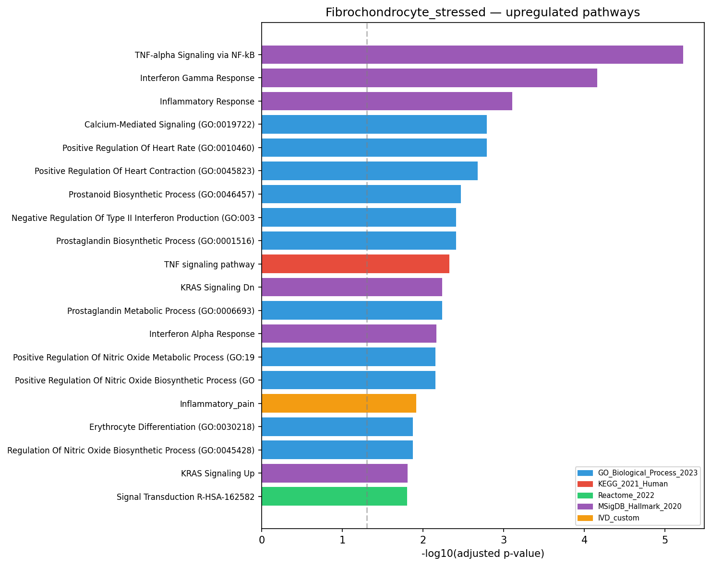
| Term | Direction | Library | Overlap | Adj P | Comparison |
|---|---|---|---|---|---|
| TNF-alpha Signaling via NF-kB | up | MSigDB_Hallmark_2020 | nan | 6.0e-06 | mild_vs_severe |
| Interferon Gamma Response | up | MSigDB_Hallmark_2020 | nan | 7.0e-05 | mild_vs_severe |
| Inflammatory Response | up | MSigDB_Hallmark_2020 | nan | 7.8e-04 | mild_vs_severe |
| Positive Regulation Of Heart Rate (GO:0010460) | up | GO_Biological_Process_2023 | nan | 1.6e-03 | mild_vs_severe |
| Calcium-Mediated Signaling (GO:0019722) | up | GO_Biological_Process_2023 | nan | 1.6e-03 | mild_vs_severe |
| Positive Regulation Of Heart Contraction (GO:0045823) | up | GO_Biological_Process_2023 | nan | 2.1e-03 | mild_vs_severe |
| Prostanoid Biosynthetic Process (GO:0046457) | up | GO_Biological_Process_2023 | nan | 3.4e-03 | mild_vs_severe |
| Prostaglandin Biosynthetic Process (GO:0001516) | up | GO_Biological_Process_2023 | nan | 3.9e-03 | mild_vs_severe |
| Negative Regulation Of Type II Interferon Production (GO:0032689) | up | GO_Biological_Process_2023 | nan | 3.9e-03 | mild_vs_severe |
| TNF signaling pathway | up | KEGG_2021_Human | nan | 4.7e-03 | mild_vs_severe |
| KRAS Signaling Dn | up | MSigDB_Hallmark_2020 | nan | 5.8e-03 | mild_vs_severe |
| Prostaglandin Metabolic Process (GO:0006693) | up | GO_Biological_Process_2023 | nan | 5.8e-03 | mild_vs_severe |
| Interferon Alpha Response | up | MSigDB_Hallmark_2020 | nan | 6.9e-03 | mild_vs_severe |
| Positive Regulation Of Nitric Oxide Biosynthetic Process (GO:0045429) | up | GO_Biological_Process_2023 | nan | 7.0e-03 | mild_vs_severe |
| Positive Regulation Of Nitric Oxide Metabolic Process (GO:1904407) | up | GO_Biological_Process_2023 | nan | 7.0e-03 | mild_vs_severe |
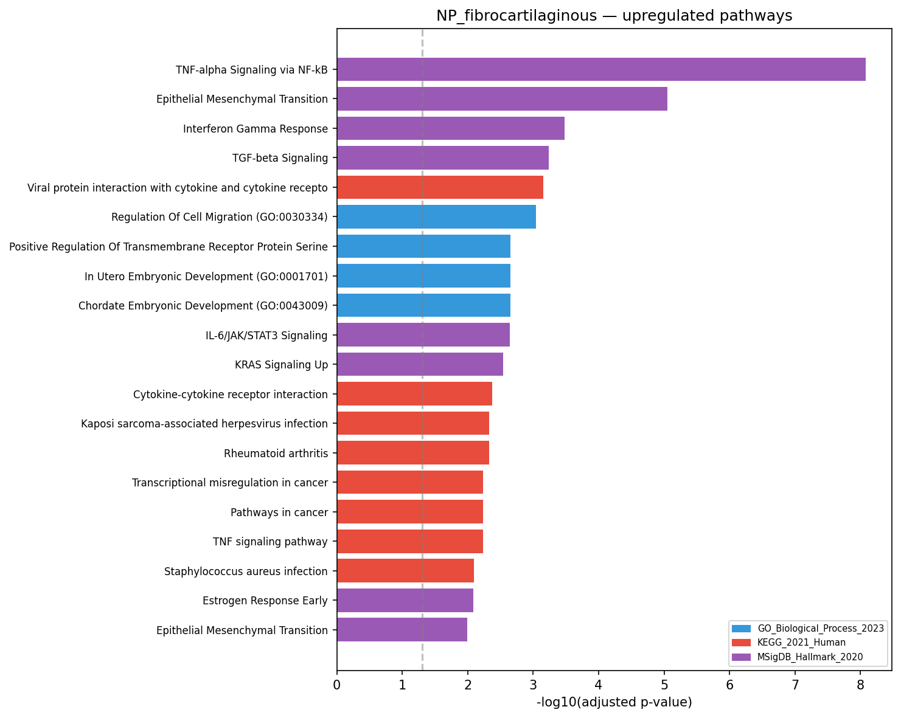
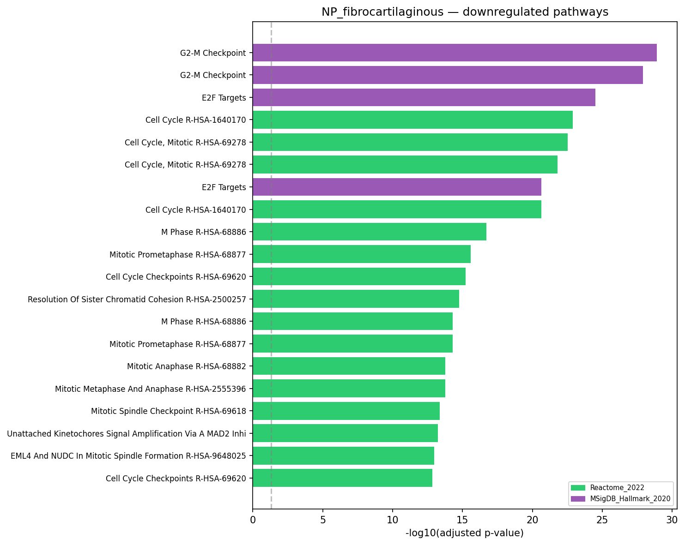
| Term | Direction | Library | Overlap | Adj P | Comparison |
|---|---|---|---|---|---|
| G2-M Checkpoint | down | MSigDB_Hallmark_2020 | nan | 1.3e-29 | healthy_vs_degenerated_severe |
| G2-M Checkpoint | down | MSigDB_Hallmark_2020 | nan | 1.3e-28 | mild_vs_severe |
| E2F Targets | down | MSigDB_Hallmark_2020 | nan | 3.0e-25 | healthy_vs_degenerated_severe |
| Cell Cycle R-HSA-1640170 | down | Reactome_2022 | nan | 1.3e-23 | healthy_vs_degenerated_severe |
| Cell Cycle, Mitotic R-HSA-69278 | down | Reactome_2022 | nan | 3.1e-23 | mild_vs_severe |
| Cell Cycle, Mitotic R-HSA-69278 | down | Reactome_2022 | nan | 1.5e-22 | healthy_vs_degenerated_severe |
| E2F Targets | down | MSigDB_Hallmark_2020 | nan | 2.2e-21 | mild_vs_severe |
| Cell Cycle R-HSA-1640170 | down | Reactome_2022 | nan | 2.3e-21 | mild_vs_severe |
| M Phase R-HSA-68886 | down | Reactome_2022 | nan | 1.9e-17 | mild_vs_severe |
| Mitotic Prometaphase R-HSA-68877 | down | Reactome_2022 | nan | 2.6e-16 | mild_vs_severe |
| Cell Cycle Checkpoints R-HSA-69620 | down | Reactome_2022 | nan | 5.8e-16 | healthy_vs_degenerated_severe |
| Resolution Of Sister Chromatid Cohesion R-HSA-2500257 | down | Reactome_2022 | nan | 1.8e-15 | mild_vs_severe |
| M Phase R-HSA-68886 | down | Reactome_2022 | nan | 5.1e-15 | healthy_vs_degenerated_severe |
| Mitotic Prometaphase R-HSA-68877 | down | Reactome_2022 | nan | 5.2e-15 | healthy_vs_degenerated_severe |
| Mitotic Anaphase R-HSA-68882 | down | Reactome_2022 | nan | 1.8e-14 | mild_vs_severe |

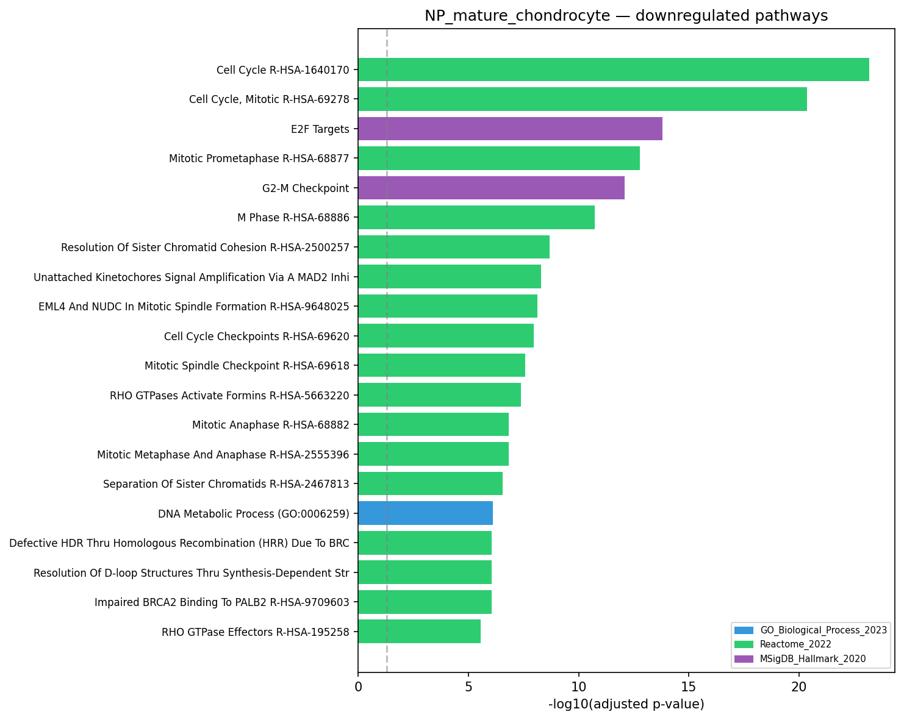
| Term | Direction | Library | Overlap | Adj P | Comparison |
|---|---|---|---|---|---|
| Cell Cycle R-HSA-1640170 | down | Reactome_2022 | nan | 6.4e-24 | mild_vs_severe |
| Cell Cycle, Mitotic R-HSA-69278 | down | Reactome_2022 | nan | 4.2e-21 | mild_vs_severe |
| TNF-alpha Signaling via NF-kB | up | MSigDB_Hallmark_2020 | nan | 8.6e-16 | mild_vs_severe |
| E2F Targets | down | MSigDB_Hallmark_2020 | nan | 1.5e-14 | mild_vs_severe |
| Mitotic Prometaphase R-HSA-68877 | down | Reactome_2022 | nan | 1.7e-13 | mild_vs_severe |
| G2-M Checkpoint | down | MSigDB_Hallmark_2020 | nan | 8.0e-13 | mild_vs_severe |
| M Phase R-HSA-68886 | down | Reactome_2022 | nan | 1.9e-11 | mild_vs_severe |
| Resolution Of Sister Chromatid Cohesion R-HSA-2500257 | down | Reactome_2022 | nan | 2.1e-09 | mild_vs_severe |
| Unattached Kinetochores Signal Amplification Via A MAD2 Inhibitory Signal R-HSA- | down | Reactome_2022 | nan | 5.1e-09 | mild_vs_severe |
| EML4 And NUDC In Mitotic Spindle Formation R-HSA-9648025 | down | Reactome_2022 | nan | 7.5e-09 | mild_vs_severe |
| Cell Cycle Checkpoints R-HSA-69620 | down | Reactome_2022 | nan | 1.1e-08 | mild_vs_severe |
| Mitotic Spindle Checkpoint R-HSA-69618 | down | Reactome_2022 | nan | 2.6e-08 | mild_vs_severe |
| RHO GTPases Activate Formins R-HSA-5663220 | down | Reactome_2022 | nan | 4.1e-08 | mild_vs_severe |
| Mitotic Anaphase R-HSA-68882 | down | Reactome_2022 | nan | 1.5e-07 | mild_vs_severe |
| Mitotic Metaphase And Anaphase R-HSA-2555396 | down | Reactome_2022 | nan | 1.5e-07 | mild_vs_severe |
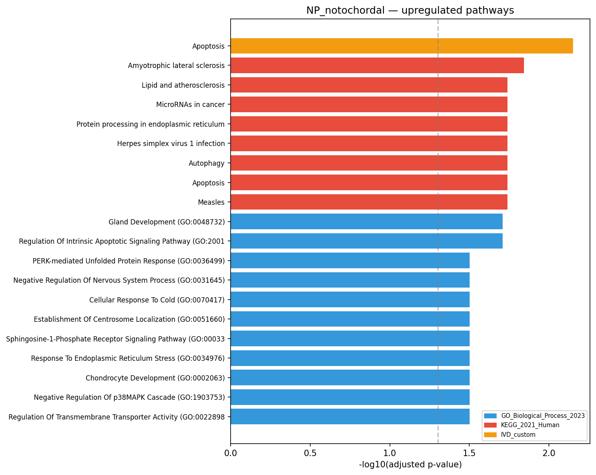
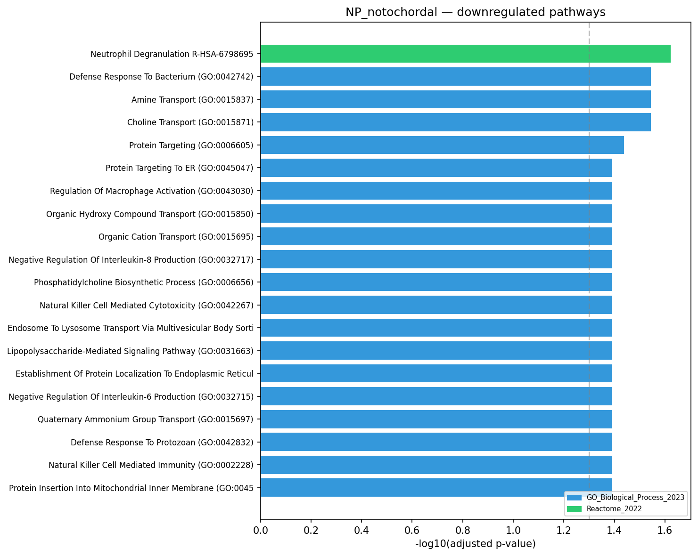
| Term | Direction | Library | Overlap | Adj P | Comparison |
|---|---|---|---|---|---|
| Apoptosis | up | IVD_custom | 1/13 | 7.1e-03 | healthy_vs_degenerated_all |
| Amyotrophic lateral sclerosis | up | KEGG_2021_Human | nan | 1.4e-02 | healthy_vs_degenerated_all |
| Herpes simplex virus 1 infection | up | KEGG_2021_Human | nan | 1.8e-02 | healthy_vs_degenerated_all |
| Measles | up | KEGG_2021_Human | nan | 1.8e-02 | healthy_vs_degenerated_all |
| Apoptosis | up | KEGG_2021_Human | nan | 1.8e-02 | healthy_vs_degenerated_all |
| Autophagy | up | KEGG_2021_Human | nan | 1.8e-02 | healthy_vs_degenerated_all |
| MicroRNAs in cancer | up | KEGG_2021_Human | nan | 1.8e-02 | healthy_vs_degenerated_all |
| Lipid and atherosclerosis | up | KEGG_2021_Human | nan | 1.8e-02 | healthy_vs_degenerated_all |
| Protein processing in endoplasmic reticulum | up | KEGG_2021_Human | nan | 1.8e-02 | healthy_vs_degenerated_all |
| Regulation Of Intrinsic Apoptotic Signaling Pathway (GO:2001242) | up | GO_Biological_Process_2023 | nan | 2.0e-02 | healthy_vs_degenerated_all |
| Gland Development (GO:0048732) | up | GO_Biological_Process_2023 | nan | 2.0e-02 | healthy_vs_degenerated_all |
| Response To Endoplasmic Reticulum Stress (GO:0034976) | up | GO_Biological_Process_2023 | nan | 3.2e-02 | healthy_vs_degenerated_all |
| Negative Regulation Of Nervous System Process (GO:0031645) | up | GO_Biological_Process_2023 | nan | 3.2e-02 | healthy_vs_degenerated_all |
| Cellular Response To Cold (GO:0070417) | up | GO_Biological_Process_2023 | nan | 3.2e-02 | healthy_vs_degenerated_all |
| Establishment Of Centrosome Localization (GO:0051660) | up | GO_Biological_Process_2023 | nan | 3.2e-02 | healthy_vs_degenerated_all |
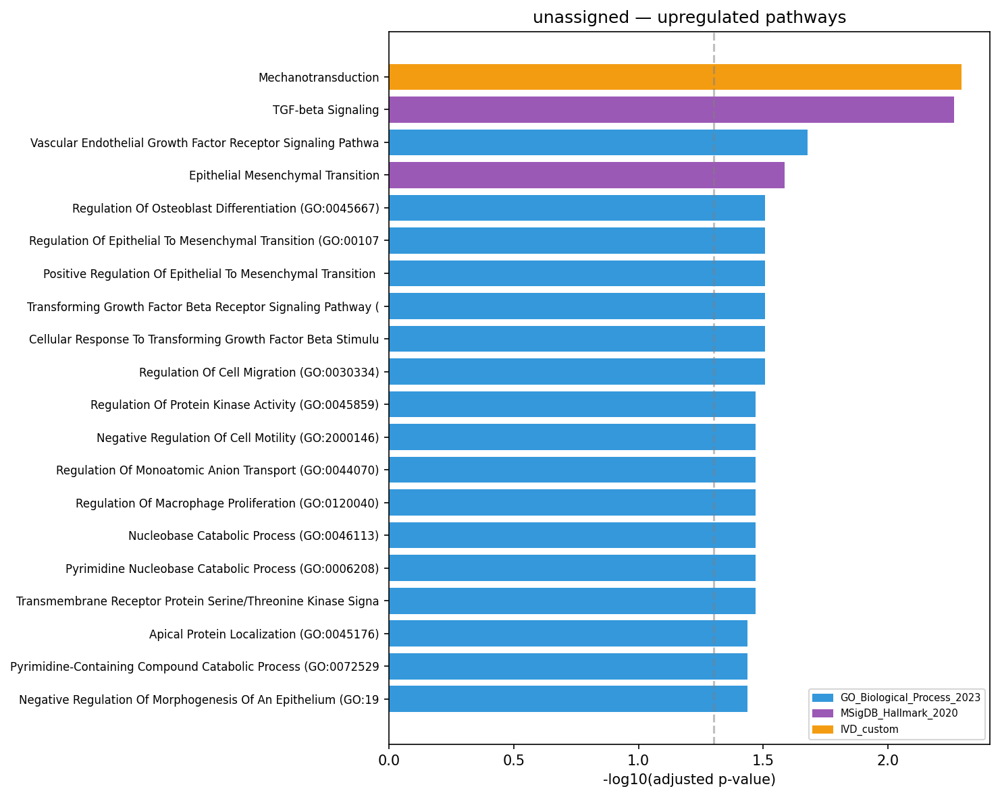
| Term | Direction | Library | Overlap | Adj P | Comparison |
|---|---|---|---|---|---|
| Mechanotransduction | up | IVD_custom | 1/7 | 5.1e-03 | mild_vs_severe |
| TGF-beta Signaling | up | MSigDB_Hallmark_2020 | nan | 5.4e-03 | mild_vs_severe |
| Vascular Endothelial Growth Factor Receptor Signaling Pathway (GO:0048010) | up | GO_Biological_Process_2023 | nan | 2.1e-02 | mild_vs_severe |
| Epithelial Mesenchymal Transition | up | MSigDB_Hallmark_2020 | nan | 2.6e-02 | mild_vs_severe |
| Positive Regulation Of Epithelial To Mesenchymal Transition (GO:0010718) | up | GO_Biological_Process_2023 | nan | 3.1e-02 | mild_vs_severe |
| Transforming Growth Factor Beta Receptor Signaling Pathway (GO:0007179) | up | GO_Biological_Process_2023 | nan | 3.1e-02 | mild_vs_severe |
| Regulation Of Epithelial To Mesenchymal Transition (GO:0010717) | up | GO_Biological_Process_2023 | nan | 3.1e-02 | mild_vs_severe |
| Regulation Of Osteoblast Differentiation (GO:0045667) | up | GO_Biological_Process_2023 | nan | 3.1e-02 | mild_vs_severe |
| Regulation Of Cell Migration (GO:0030334) | up | GO_Biological_Process_2023 | nan | 3.1e-02 | mild_vs_severe |
| Cellular Response To Transforming Growth Factor Beta Stimulus (GO:0071560) | up | GO_Biological_Process_2023 | nan | 3.1e-02 | mild_vs_severe |
| Transmembrane Receptor Protein Serine/Threonine Kinase Signaling Pathway (GO:000 | up | GO_Biological_Process_2023 | nan | 3.4e-02 | mild_vs_severe |
| Regulation Of Protein Kinase Activity (GO:0045859) | up | GO_Biological_Process_2023 | nan | 3.4e-02 | mild_vs_severe |
| Negative Regulation Of Cell Motility (GO:2000146) | up | GO_Biological_Process_2023 | nan | 3.4e-02 | mild_vs_severe |
| Pyrimidine Nucleobase Catabolic Process (GO:0006208) | up | GO_Biological_Process_2023 | nan | 3.4e-02 | mild_vs_severe |
| Regulation Of Macrophage Proliferation (GO:0120040) | up | GO_Biological_Process_2023 | nan | 3.4e-02 | mild_vs_severe |

| Term | NES | FDR | Cell Type | Comparison | Library |
|---|---|---|---|---|---|
| TNF-alpha Signaling via NF-kB | 2.52 | 0.0e+00 | AF_inner | healthy_vs_degenerated_all | MSigDB_Hallmark_2020 |
| Hypoxia | 2.09 | 0.0e+00 | AF_inner | healthy_vs_degenerated_all | MSigDB_Hallmark_2020 |
| Cellular Response To Hypoxia (GO:0071456) | 2.28 | 0.0e+00 | AF_inner | healthy_vs_degenerated_severe | GO_Biological_Process_2023 |
| Cellular Response To Decreased Oxygen Levels (GO:0036294) | 2.27 | 0.0e+00 | AF_inner | healthy_vs_degenerated_severe | GO_Biological_Process_2023 |
| TNF-alpha Signaling via NF-kB | 2.50 | 0.0e+00 | AF_inner | healthy_vs_degenerated_severe | MSigDB_Hallmark_2020 |
| Hypoxia | 2.16 | 0.0e+00 | AF_inner | healthy_vs_degenerated_severe | MSigDB_Hallmark_2020 |
| Cytoplasmic Translation (GO:0002181) | -2.53 | 0.0e+00 | AF_outer | healthy_vs_degenerated_all | GO_Biological_Process_2023 |
| Peptide Biosynthetic Process (GO:0043043) | -2.33 | 0.0e+00 | AF_outer | healthy_vs_degenerated_all | GO_Biological_Process_2023 |
| Macromolecule Biosynthetic Process (GO:0009059) | -2.30 | 0.0e+00 | AF_outer | healthy_vs_degenerated_all | GO_Biological_Process_2023 |
| Spindle Assembly Checkpoint Signaling (GO:0071173) | -2.24 | 0.0e+00 | AF_outer | healthy_vs_degenerated_all | GO_Biological_Process_2023 |
| Mitotic Spindle Assembly Checkpoint Signaling (GO:0007094) | -2.24 | 0.0e+00 | AF_outer | healthy_vs_degenerated_all | GO_Biological_Process_2023 |
| Mitotic Spindle Checkpoint Signaling (GO:0071174) | -2.24 | 0.0e+00 | AF_outer | healthy_vs_degenerated_all | GO_Biological_Process_2023 |
| Negative Regulation Of Mitotic Metaphase/Anaphase Transition (GO:0045841) | -2.23 | 0.0e+00 | AF_outer | healthy_vs_degenerated_all | GO_Biological_Process_2023 |
| E2F Targets | -2.34 | 0.0e+00 | AF_outer | healthy_vs_degenerated_all | MSigDB_Hallmark_2020 |
| G2-M Checkpoint | -2.26 | 0.0e+00 | AF_outer | healthy_vs_degenerated_all | MSigDB_Hallmark_2020 |
| Cytoplasmic Translation (GO:0002181) | -2.88 | 0.0e+00 | AF_outer | healthy_vs_degenerated_severe | GO_Biological_Process_2023 |
| Peptide Biosynthetic Process (GO:0043043) | -2.77 | 0.0e+00 | AF_outer | healthy_vs_degenerated_severe | GO_Biological_Process_2023 |
| Macromolecule Biosynthetic Process (GO:0009059) | -2.71 | 0.0e+00 | AF_outer | healthy_vs_degenerated_severe | GO_Biological_Process_2023 |
| Translation (GO:0006412) | -2.68 | 0.0e+00 | AF_outer | healthy_vs_degenerated_severe | GO_Biological_Process_2023 |
| Mitotic Sister Chromatid Segregation (GO:0000070) | -2.64 | 0.0e+00 | AF_outer | healthy_vs_degenerated_severe | GO_Biological_Process_2023 |
| Mitotic Cytokinesis (GO:0000281) | -2.53 | 0.0e+00 | AF_outer | healthy_vs_degenerated_severe | GO_Biological_Process_2023 |
| Spindle Assembly Checkpoint Signaling (GO:0071173) | -2.48 | 0.0e+00 | AF_outer | healthy_vs_degenerated_severe | GO_Biological_Process_2023 |
| Mitotic Spindle Checkpoint Signaling (GO:0071174) | -2.48 | 0.0e+00 | AF_outer | healthy_vs_degenerated_severe | GO_Biological_Process_2023 |
| Mitotic Spindle Assembly Checkpoint Signaling (GO:0007094) | -2.48 | 0.0e+00 | AF_outer | healthy_vs_degenerated_severe | GO_Biological_Process_2023 |
| Mitotic Metaphase Plate Congression (GO:0007080) | -2.47 | 0.0e+00 | AF_outer | healthy_vs_degenerated_severe | GO_Biological_Process_2023 |
| Mitotic Spindle Organization (GO:0007052) | -2.47 | 0.0e+00 | AF_outer | healthy_vs_degenerated_severe | GO_Biological_Process_2023 |
| Cytoskeleton-Dependent Cytokinesis (GO:0061640) | -2.46 | 0.0e+00 | AF_outer | healthy_vs_degenerated_severe | GO_Biological_Process_2023 |
| Negative Regulation Of Mitotic Metaphase/Anaphase Transition (GO:0045841) | -2.45 | 0.0e+00 | AF_outer | healthy_vs_degenerated_severe | GO_Biological_Process_2023 |
| Microtubule Cytoskeleton Organization Involved In Mitosis (GO:1902850) | -2.44 | 0.0e+00 | AF_outer | healthy_vs_degenerated_severe | GO_Biological_Process_2023 |
| Cellular Respiration (GO:0045333) | -2.39 | 0.0e+00 | AF_outer | healthy_vs_degenerated_severe | GO_Biological_Process_2023 |

| TF | Activity | padj | Cell Type | Comparison |
|---|---|---|---|---|
| OLIG2 | -0.50 (DOWN) | 5.4e-04 | NP_fibrocartilaginous | mild_vs_severe |
| OLIG2 | -0.30 (DOWN) | 5.0e-02 | NP_fibrocartilaginous | healthy_vs_degenerated_severe |
| IRX1 | 0.20 (UP) | 1.6e-02 | Fibrochondrocyte_stressed | mild_vs_severe |
| ZBTB14 | -0.20 (DOWN) | 5.1e-03 | NP_mature_chondrocyte | mild_vs_severe |
| MBD1 | 0.20 (UP) | 3.3e-03 | NP_mature_chondrocyte | mild_vs_severe |
| ZNF382 | -0.18 (DOWN) | 1.5e-02 | AF_inner | healthy_vs_degenerated_severe |
| DLX4 | 0.17 (UP) | 3.8e-02 | NP_mature_chondrocyte | mild_vs_severe |
| DMTF1 | -0.15 (DOWN) | 3.6e-02 | NP_fibrocartilaginous | healthy_vs_degenerated_mild |
| IRF6 | 0.14 (UP) | 1.1e-02 | AF_inner | healthy_vs_degenerated_all |
| IRF6 | 0.14 (UP) | 1.9e-02 | AF_inner | healthy_vs_degenerated_severe |
| REL | 0.13 (UP) | 1.8e-03 | NP_mature_chondrocyte | mild_vs_severe |
| TCF7 | 0.12 (UP) | 1.4e-02 | AF_inner | healthy_vs_degenerated_all |
| TCF7 | 0.12 (UP) | 2.2e-02 | AF_inner | healthy_vs_degenerated_severe |
| E2F3 | -0.12 (DOWN) | 1.9e-03 | NP_fibrocartilaginous | mild_vs_severe |
| NFATC3 | 0.11 (UP) | 2.7e-02 | Fibrochondrocyte_stressed | mild_vs_severe |
| NFYC | -0.11 (DOWN) | 3.9e-02 | NP_fibrocartilaginous | healthy_vs_degenerated_mild |
| HMGA2 | -0.11 (DOWN) | 2.5e-02 | NP_fibrocartilaginous | mild_vs_severe |
| NKX2-1 | -0.10 (DOWN) | 2.8e-02 | NP_fibrocartilaginous | mild_vs_severe |
| HBP1 | 0.10 (UP) | 1.5e-02 | NP_mature_chondrocyte | mild_vs_severe |
| E2F4 | -0.09 (DOWN) | 3.5e-08 | NP_fibrocartilaginous | mild_vs_severe |
| NR2F2 | 0.09 (UP) | 3.8e-02 | NP_fibrocartilaginous | mild_vs_severe |
| MYBL2 | -0.09 (DOWN) | 2.8e-02 | NP_fibrocartilaginous | mild_vs_severe |
| SMAD1 | 0.09 (UP) | 2.8e-02 | NP_fibrocartilaginous | mild_vs_severe |
| HLF | -0.09 (DOWN) | 3.8e-02 | NP_mature_chondrocyte | mild_vs_severe |
| SRF | 0.08 (UP) | 1.2e-02 | NP_mature_chondrocyte | mild_vs_severe |
| HMGA2 | 0.08 (UP) | 7.7e-03 | AF_inner | healthy_vs_degenerated_severe |
| RARA | 0.08 (UP) | 3.8e-02 | NP_mature_chondrocyte | mild_vs_severe |
| GLI2 | -0.08 (DOWN) | 2.0e-02 | NP_fibrocartilaginous | mild_vs_severe |
| STAT2 | 0.07 (UP) | 3.8e-02 | Fibrochondrocyte_stressed | mild_vs_severe |
| E2F1 | -0.07 (DOWN) | 1.6e-03 | NP_fibrocartilaginous | mild_vs_severe |

| Gene | Direction | log2FC | padj | Cell Type | Comparison | Pain Category |
|---|---|---|---|---|---|---|
| PTGS2 | UP | +5.30 | 5.1e-08 | AF_inner | healthy_vs_degenerated_severe | Inflammatory_pain |
| PTGS2 | UP | +5.28 | 4.6e-07 | AF_inner | healthy_vs_degenerated_all | Inflammatory_pain |
| PTGS2 | DOWN | -3.39 | 1.6e-04 | NP_notochordal | healthy_vs_degenerated_all | Inflammatory_pain |
| VEGFA | UP | +3.21 | 1.5e-03 | AF_inner | healthy_vs_degenerated_severe | Neovascularization |
| CCL2 | UP | +2.14 | 4.2e-03 | NP_mature_chondrocyte | mild_vs_severe | Inflammatory_pain |
| VEGFA | UP | +3.18 | 7.9e-03 | AF_inner | healthy_vs_degenerated_all | Neovascularization |
| PTGES | UP | +3.39 | 8.9e-03 | AF_inner | healthy_vs_degenerated_severe | Inflammatory_pain |
| PLA2G2A | UP | +1.82 | 1.5e-02 | NP_mature_chondrocyte | mild_vs_severe | Inflammatory_pain |
| PLA2G2A | UP | +4.38 | 2.7e-02 | NP_fibrocartilaginous | healthy_vs_degenerated_severe | Inflammatory_pain |
| BDKRB2 | UP | +1.58 | 2.8e-02 | NP_fibrocartilaginous | mild_vs_severe | Inflammatory_pain |
| VEGFA | UP | +0.89 | 3.4e-02 | NP_fibrocartilaginous | mild_vs_severe | Neovascularization |
| FGF2 | UP | +0.93 | 4.6e-02 | NP_mature_chondrocyte | mild_vs_severe | Neovascularization |
| PTGS2 | UP | +2.22 | 4.7e-02 | Fibrochondrocyte_stressed | mild_vs_severe | Inflammatory_pain |